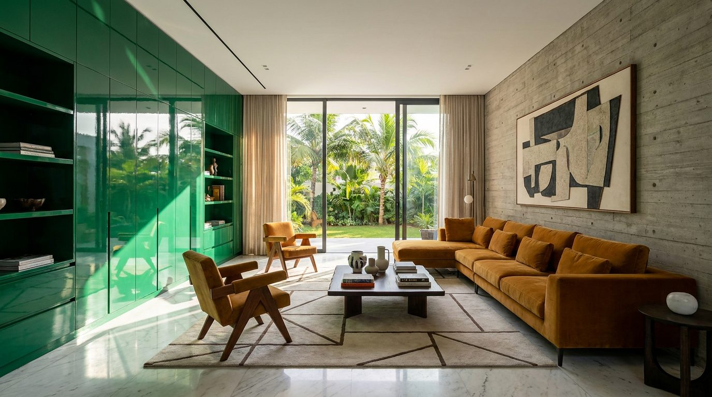

Atlante · INT-NG-01 · Nigeria · Africa
Villa contemporanea a Lagos per la nuova borghesia
Esempi · esterno e interno


Perché funziona
A Lagos la nuova borghesia compra arredo per rappresentare, non per nascondersi: il set deve avere una parete che si veda in fotografia e materiali che si sentano al tatto. Il made in Italy funziona se arriva come competenza tecnica (lacca, marmo, ottone) e non come citazione europea da esibire. Un solo accento saturo tiene il registro loud senza scivolare nel set da albergo.
Architettura · elementi riproducibili
- soggiorno 8x6 m, soffitto 3,5 m, una parete in lacca smeraldo ad alto gloss
- parete opposta in cemento a vista con impronta di cassaforma, moduli 2,4x1,2 m
- pavimento in marmo bianco lucido 1200x600 mm, venatura grigia continua
- porta pivot h 2,6 m in legno tinto scuro, larghezza 1,2 m
- vetrata scorrevole h 3,0 m su terrazza piantata, traverso a 2,2 m
- brise-soleil in listelli di legno 60x120 mm, passo 150 mm
- controsoffitto a 3,5 m con stacco perimetrale 20 mm
- proporzione chiave: un pieno saturo entro il 35% del fotogramma contro due piani neutri
Fatto verificato: Eko Atlantic è il quartiere di Lagos costruito su terreno recuperato dal mare, riferimento dell'edilizia nuova di fascia alta della città.
Fatto verificato: Alara, concept store di Lagos progettato da Adjaye Associates (2016, circa 965 mq), è un riferimento reale di interni contemporanei nigeriani.
Valutazione: il registro loud a Lagos non è quello europeo, è saturo, lucido, fotografico; si tiene con una sola parete satura e materiali veri, altrimenti diventa un render.
Marmo lucido e lacca riflettono la terrazza: il riflesso va costruito o escluso, non lasciato al modello.
Luce
Prompt di generazione (EN)
Empty contemporary villa reception room in Lagos, 8 x 6 m, ceiling 3.5 m, one wall in high-gloss emerald lacquer, opposite wall in board-formed concrete with 2.4 x 1.2 m formwork marks, floor of polished white marble 1200 x 600 mm with continuous grey veining, 2.6 m pivot door in dark stained timber, full-height sliding glass to a planted terrace with timber brise-soleil at 150 mm pitch, no furniture except one generic low console. One key light: hard tropical sun through the opening on camera left at 45 degrees, 5400 K, specular highlight on the lacquer, crisp shadow on marble. 28 mm lens, camera height 1.2 m, two-point perspective, verticals parallel, no text, no logos, no mirror.